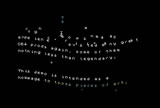
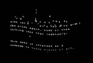
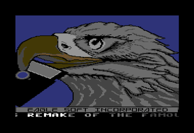

Lastest News

GHOST TOWN JS
A JavaScript remake of the Commodore C16 game.


Visit the mysterious Ghost Town, a place full of unexpected dangers and hidden treasures!
Ghost Town JS is a JavaScript remake of the fantastic game written by Udo Gertz and released in 1985 for the Commodore C16, C116 & Plus/4. This remake is pixel perfect as it reads in the binary screen data from the original game. For more information and additional links, scroll down the page after launching the game. Have fun!
Launch game
MY GOD, IT'S FULL OF SINUS!
A C64 retro demo made in JavaScript.


 


awsm's biggest production yet, featuring 10 different screens with code & art made exclusively for this demo. Works best (and probably only) in a Chrome browser. If you can't get it to run on your machine, you can watch the video on youtube. The demo is listed on pouët.net.
Launch demo
C64 cracktro remakes made in JavaScript
You can do a lot of cool stuff in the browser with the canvas element and some JavaScript. I recreated some iconic C64 cracktros as an exercise, using a library called CODEF.Papillons Cracktro

Hotline Cracktro

T.E.C. Industries Cracktro

Dynamic Duo Cracktro
Ikari Cracktro

awsm (fake) Cracktro
Fairlight Cracktro
Eaglesoft Cracktro
Commodore C64
A collection of random releases for the Commodore 64. Click on the images to download the .prg file or visit the releases on csdb.dk.Fallen Stars by Mayday!
"Fallen Stars" by Mayday! We scored 9th place at the X party 2016! Click here to see a composition of the PETSCII animation and watch the demo on youtube.
Fallen Stars on csdb.dk{kind=link}

Zelda PETSCII Room
A Zelda-style room created in pure PETSCII. I wanted to turn this into a small game, but lost pace and motivation along the way. The usual. I'm quite pleased with how it turned out, however, so I released this screen at least.
Zelda PETSCII on csdb.dk
Nemesis & Gradius Crack
TheRyk of Mayday released a great Jewel Crack of Nemesis & Gradius. I fixed and updated the original title screen, which was converted from the ZX Spectrum game. It's my first contribution to a proper crack and my first hires screen release.
Nemesis on csdb.dk
LOVE (multicolor, sprites)
Scored 4th place at BCC#10, 2016. Another screen I started a long time ago, but only finished it in a rush just before the compo started. Some rasters in the border and top and border sprites to extend the lady to full beauty.
Love BCC on csdb.dkMoon
Released at BCC#10 on Feb 27, 2016, this screen scored 3rd in the graphics compo. I made it almost a year ago and never finished it to the level I intended.
Moon on csdb.dk
Schaltkreis
Just a small PETSCII screen that plays around with the fantastic tune from Eddie. I decided to release it as is, knowing that it would never become 100% as I wanted it to be. Some raster bars and sprites involved.
Schaltkreis on csdb.dk
Positive Karma
A conversion of the original screen from the Full Of Sinus demo. The picture got more colorful to compensate for the lack of a proper DYCP scroller and the zoom effect. I had a hard fight to get the raster bars stable.
Positive Karma on csdb.dkVision logo PETSCII
My second PETSCII attempt. If you look long enough, you might notice that it resembles a postcard, with mountains in the back, the beach in the front and the logo being the hotels.
Vision Logo on csdb.dk
nyanPETSCII
My first PETSCII logo. The main screen area is pure charset, but I opened the top and bottom borders and put some sprites in it to extend the image.
Nyanpetscii on csdb.dkLook Mom, I'm an Eagle!
My first conversion of a screen from the Full Of Sinus demo. Minor tweaks on the image and a color wash effect on the logo and scroller to compensate for the lack of a custom font.
Look Mom, I'm an Eagle! on csdb.dk
Can I haz member?
My second C64 program, serving as request to get accepted as a member on csdb.dk. You can see that it is still pretty much the same code that I used for the first demo.
Can I Haz Member? on csdb.dkfirst
My first demo on the C64 after about 25 years. Nothing special by any standards, but very important for me to get back into demo development.
No csdb.dk entrymiscellaneous
Some stuff I created along the way. Feel free to download and use them for your personal pleasure. How about a cool MOS logo tee? Or, create your own browser demo and put a stylish Commodore 1984S monitor around it. Do it. And send me link so I can check it out.
Commodore 64 memory map
The memory map of all available registers and their functionality is a mandatory reference for developing on the Commodore 64. This page should look alright on mobile devices too.
www.awsm.de/mem64/Commodore vector labels
RetroPie is a great emulation machine based on the Raspberry Pi. It has full VICE support, but was missing labels for the Commodore VIC20, C16 and C128. So I made some. Feel free to use them.
Download ZIP fileMOS vector logo
I wanted to have a nice shirt with the MOS TECHNOLOGY logo on it and couldn't find any high resolution or vector versions of it, so I made one. Feel free to use it. File contains PNG and SVG versions.
Download ZIP file
Commodore 1084S vector file
I needed a 1084S image for my demo and couldn't find any on the web, so I made one. It is completely vector based and you can download and use it for free. Go ahead!
Download SVG file
Atari SM124 vector file
Here's something for the Atari fans: vector versions of the famous Atari SM124 and SC1224 monitors. The zip file contains a vector file, a Photoshop file with layers and a ready-to-use png images to integrate with your browser demo.
Download ZIP fileVintage TV vector file
For my Ghost Town remake I decided to create a nice retro looking tv and I'm quite pleased how it turned out. You can grab the zip file containing vector and png files right here.
Download ZIP file